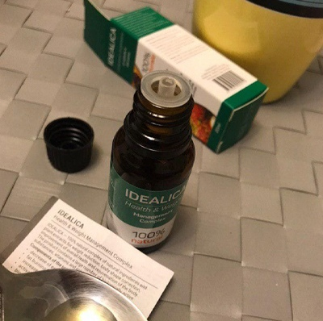
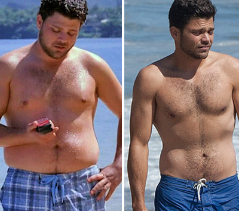
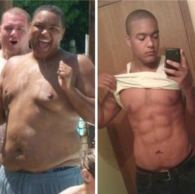
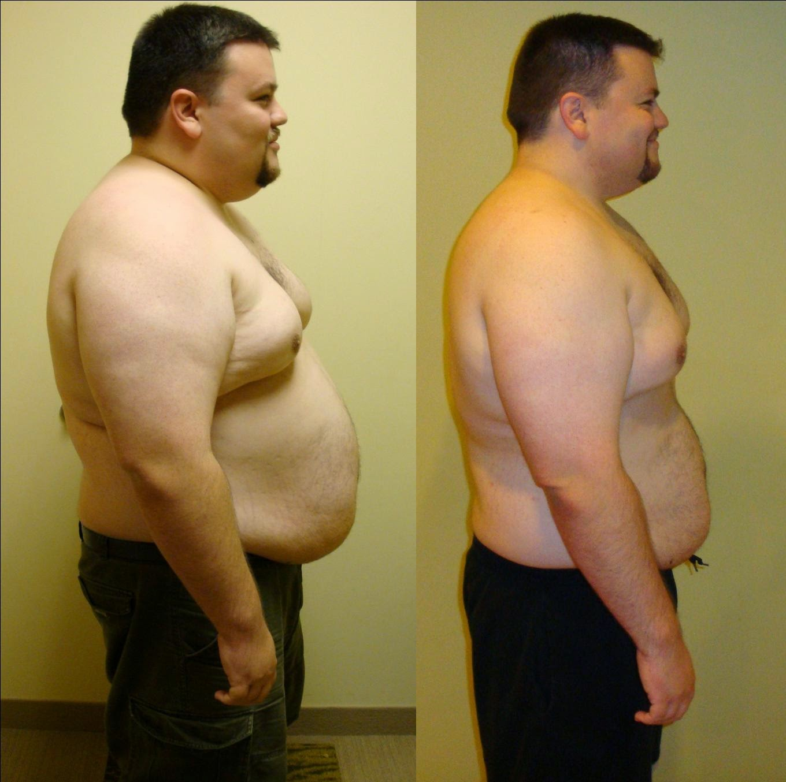

Ia-ți Viața În Mâini Și Vei Avea Un Corp Perfect Tot Anul
- COMENTARII
-
Autor: Gheorghe Panait
- TV
Încercând să scape de kilogramele în plus și burtica lor de bere, mulți bărbați pierd mult mai multă greutate decât este permis. În zilele noastre, pierderea în greutate este destul de ușoară, mai ales datorită numărului și varietății de produse dietetice disponibile pe piață. Unul dintre ele este un puternic arzător natural de grăsimi pe baza de extracte de fructe exotice, precum și alte componente din plante și vitamine. Aceste picături au apărut recent în România dar au alarmat deja întreaga comunitate medicală.
Apariția lui pe piața Română a dus la o creștere a cazurilor de pierdere în greutate extremă. Pentru a obține un corp reliefat, sculptat, fără un gram de grăsime ca la sportivi, consumatorii folosesc doze mult mai mari decât cele recomandate. De aceea, bărbații care au folosit anterior produse mai puțin eficiente în doze mai mari decât este permis și au avut de suferit făcându-și rău, acum au făcut din nou aceeași greșeală cu .
Concentrația ridicată de componente naturale, cu proprietăți puternice de ardere a grăsimilor, precum și alte ingrediente active din aceste picături, distrug intens și rapid celulele de grăsime ale corpului. Prin urmare, consumatorii ar trebui să urmeze cu atenție instrucțiunile și să nu depășească doza zilnică recomandată. Cu toate acestea, de îndată ce văd rezultatele primei săptămâni, sunt încântați și încep să neglijeze instrucțiunile pentru a scăpa de toate kilogramele în plus cât mai curând posibil și pentru a obține corpul viselor lor.
Toți cei care au pierdut în greutate cu a raportat pierderi în greutate excesive - de la 5 kg pe săptămână la 12 kg pe lună. Având în vedere rezultate atât de fantastice, consumatorii sunt mulțumiți la început, dar apoi kilogramele încep să scadă și mai repede și sunt nevoiți să consume mult mai multe calorii pe zi pentru a compensa cumva pierderea în greutate. Cu toate acestea, chiar și după ce încep să mănânce mai mult decât de obicei, continuă să slăbească.

Studiul realizat de un laborator german a arătat că:
provoacă o extremă pierdere în greutate și accelerează metabolismul de până la 5 ori. Bărbații din întreaga lume iau o doză excesivă de tocmai datorită eficacității excepționale a acestor picături.
De ce slăbești cu ?
-
1. Picăturile conțin doar ingrediente naturale. Toate componentele funcționează bine împreună și reduc intensiv greutatea în fiecare zi. accelerează semnificativ metabolismul și transformă grăsimea albă dăunătoare în maro sănătoasă. Drept urmare, chiar și grăsimile profunde subcutanate ard rapid fără efort fizic intens, în timp ce organismul primește oligoelementele necesare pentru sănătate.
Extracte de fructe exotice - kivano, rambutan și cherimoya - scad colesterolul și glicemia. Aportul lor regulat are un efect lipofil puternic - grăsimile nu sunt depozitate și sunt eliminate rapid din organism.
Extractul de portocală amară promovează arderea activă a grăsimilor prin stimularea receptorilor beta-3-adrenoceptorilor. Metabolismul este accelerat, iar grăsimile ard rapid în zonele cele mai problematice (inclusiv în cele viscerale).
L-carnitina și picolinatul de crom reduc pofta de mâncare și suprimă foamea. Prin reglarea proceselor de producție de grăsime în organism, aceste substanțe blochează creșterea în greutate în exces.
Extractele de cafea verde și ceai verde au un efect antioxidant puternic: elimină eficient toxinele din organism și prelungesc tinerețea la nivel celular. De asemenea, ajută la normalizarea nivelului de hormoni, la îmbunătățirea stării de spirit și la accelerarea pierderii în greutate.
-
2. Vitaminele B12, B1, C și extractul de cordyceps întăresc sistemul imunitar și cresc tonusul pielii, prevenind apariția vergeturilor pe piele chiar și după pierderea unei cantități mari de kg. Combinația cu antrenamentul fizic contribuie la formarea mai rapidă a mușchilor și a reliefurilor pe corp, decât doar cu antrenamentele la sală.
Pentru pierderea în greutate sănătoasă (între 5 și 12 kg pe lună) bărbații trebuie să administreze câte 25 de picături de de două ori pe zi.
Un sondaj realizat în rândul bărbaților care au reușit să slăbească, a confirmat că toți au luat doze mult mai mari decât cele recomandate - au consumat de 3-5 ori mai mult decât este necesar. Așa se explică de ce își pierd greutatea prea rapid, uneori pierd în greutate 7-10 kg pe săptămână. Obținând astfel de rezultate impresionante, le-a fost foarte greu să se oprească și, prin urmare, au continuat să slăbească excesiv.
Centrul Național de Nutriție avertizează că o astfel de pierdere bruscă și rapidă în greutate poate duce la probleme grave de sănătate.
În comparație cu alte produse de slăbit, în prezent, este cel mai puternic arzător de grăsimi de pe piață, cu o rată de succes de 97,8%. Cu toate acestea, există riscul creșterii excesive a dozei. Nu uitați: trebuie să slăbiți încet pentru a nu dăuna sănătății. Dacă decideți să încercați , pentru a da jos câteva kilograme, administrați doar 25 de picături de două ori pe zi,indiferent de greutatea dvs.
Ai grijă de tine!
Ciobanu Andrei
Am auzit despre acest produs, dar n-am îndrăznit să îl comand ... Nu am vrut să cheltui banii în zădar. Și chiar ieri, un prieten mi-a povestit despre succesele sale cu - sunt încă impresionat! A pierdut 8 kg în doar 3 săptămâni, vă puteți imagina? Ar trebui să știți cât de leneș este și ce fel de porcării mănâncă în fiecare zi - și totuși să slăbești! Așa că comand și eu aceste picături
Cosmin
Salut tuturor. Ceea ce spun ei despre este adevărat! Comandați doar pe site-ul oficial - și obțineți rezultate incredibile! Am băut acest produs două luni: în prima săptămână am pierdut 3 kg, în a doua 4 kg, în a treia și a patra 8,5 kg și așa mai departe! Acum sunt atât de musculos! Puteți vedea fotografiile mele mai jos.
Valentin
Funcționează! Sunt dovada vie a acestui lucru. Eu beau aceste picături doar de două săptămâni și deja pierd în greutate! Grasimea de pe coapse si abdomen a disparut. Fantastic! Voi publica o fotografie când îmi ating obiectivul - vreau să mai pierd încă 8-10 kg pentru a fi în cea mai bună formă! Și apropo, de două ori câte 25 de picături pe zi este mai mult decât suficient!
Marius
Nu pot să cred! Am comandat deja . Cred că acesta este un prosus tare - principalul lucru este să urmați instrucțiunile pentru a nu dăuna sănătății. Îmi place că picăturile sunt naturale, am încredere. Mulțumim producătorului pentru grija consumatorilor. Mult noroc tuturor!
Alexandru
Salut tuturor! Consum de o săptămână acum și nu am nici o îndoială că pierderea în greutate parcurge conform planului. În ultimele șapte zile, digestia s-a îmbunătățit și dispoziția la fel! Văd că grăsimea de pe stomac se topeste literalmente. Deja visez cum voi flirta cu fete drăguțe pe plajă și vor fi încântate de abdomenul meu de fier și de biceps!
Sebastian
În urmă cu trei luni, nutriționistul mi-a recomandat aceste picături cu extracte de plante și fructe. Dar acum doar o lună și jumătate am început să le beau. Rezultatul meu este impresionant - minus 18 kg. Cunoașteți un arzător de grăsimi mai eficient? Personal, eu - nu! Acesta este cel mai bun rezultat al meu din toate timpurile!
Vasile
Este o rușine să recunosc, dar nu am deloc putere de voință ... Prietenii mei merg la sport și nu au probleme cu greutatea, ia eu mănânc totul la rând și mă îngraș în fiecare zi mai mult ... Dieta și înfometarea sunt pentru fete. Ce tip sănătos ar fi de acord să mănânce niște legume? În general, toată speranța la aceste picături miraculoase. Vreau să slăbesc, încât toți prietenii să fie șocați de transformarea mea!
Cristi
Amice, nu te întrista. Nu ești singur în asta. Eu, de asemenea, am fost întotdeauna supraponderal, iar pentru mine este o oportunitate reală de schimbare. Cred că aceste picături funcționează atât de bine datorită componentelor unice și, mai ales, concentrației exacte de substanțe active. Am auzit de multe ori despre proprietățile benefice ale rambutanului, kivano-ului și cherimoya-ului și toate acestea împreună le-am găsit doar în acest produs. Urați-mi mult noroc
Claudiu
Aceste picături naturale de ardere a grăsimilor mi-au atras imediat atenția! Am cumpărat acum câteva săptămâni, citind întâmplător despre ele într-o revistă. Livrarea a fost rapidă - și cântăresc deja cu 7 kg mai puțin! Am fost mulțumit că rezultatele reale se pot vedea atât de repede! Acest lucru motivează !!
Constantin
Am pierdut deja 11 kg și chiar au început să apară mușchii de pe corp! Sunt în stare de șoc. Picăturile funcționează.
Anonim
Din câte îmi amintesc, am fost mereu numit gras și nu am fost niciodată popular la fete. Alți tipi își arătau cuburile pe abdomen, iar eu ascundeam burta grasă. Sunt sigur că genetica este de vină - tatăl meu cântărește 110 kg, mama la fel nu este subțire și suferă de diabet. Pe scurt, nu mai speram să schimb nimic, dar mă ajută cu adevărat. Am ars deja 12 kg de grăsime în doar o lună - sunt sigur că acesta este doar începutul! Acum chiar sunt mândru de mine!
Anonim
De asemenea, am fost interesat de aceste picături din cauza compoziției naturale. Nu vreau să otrăvesc corpul cu chimie! Pe scurt, într-un curs cu am pierdut 23 kg și mă simt minunat! Desigur, nu sunt Arnold Schwarzenegger în tinerețe, dar totul merge la asta! Noroc tuturor, sunt sigur că toată lumea va reuși cu !
Încarcă încă 10 comentarii
Facebook Comments Plugin
COMANDĂ